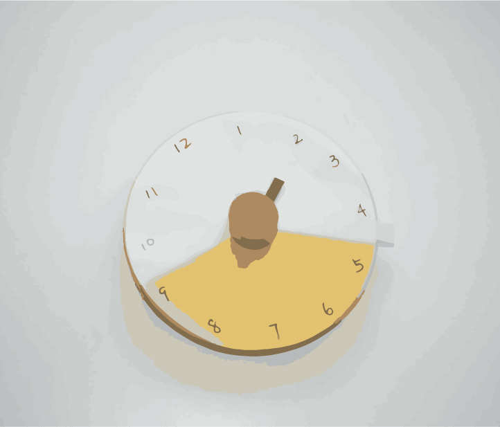

USELESS MOMENTS OF MODERN LIFE
U.M.
“Time you enjoy wasting, was not wasted.“ People in modern life want their every moment to be useful and precious. But what is really precious? Useless Moment is a timer, a bracelet for Women. Every single pearl represents 5 minutes. So a Maximum of 30 minutes can be set at one time. It’s not so accurate as a watch. But why should it be?
2017 | KIEL | SEMESTER PROJECT
#Storytelling #Interaction Design #Innovation
SOCIAL CONTEXT
Preciousness of Time
Time is precious. People in the modern life try to make good use of time. We rush. We give out most of our time to work in order to gain money or success. But what is really valuable? How about time with ourselves and time with families? This project is about TIME.
PROCESS
Brainstorming:
When We Think of Time...
Brainstorming the moments when we think of time, and the moments when we forget about time.
INTRODUCING TIME BRACELET
Time was materialized as the beads on the bracelet. Every bead represents 5 minutes. Once they are set, they will start to count down.

STORIES
Moment for Expecting
Ally is an office lady. It’s a Friday. Ally finished her work earlier. She quickly went back home and changed a tulle skirt which she never wore at work. She planed to watch a film with her friend today. She arrived 20 minutes earlier at the cinema. She didn’t want to be late because she likes the director. Her friend hadn’t arrived. So she set a time on the bracelet and waited with full expectancy.
Moment for Breathing
Ally is very hardworking. She can keep working for long time. But she found that the longer she works, the lower efficiency she has. So she decided to take a good rest at lunch time. She set her bracelet and took a walk in the park near her office. The air in the park refreshed her mind. And the moment helped her keep a little distance from the busy work.
Moment for Oneself
Ally has a colourful social life. She has plenty of friends, and she likes to hang out with them. But somtimes Ally would like to just stay with herself. She would turn her smartphone to flight mode and set some time on the bracelet. It’s a moment just for her to enjoy the time itself and think about her life.